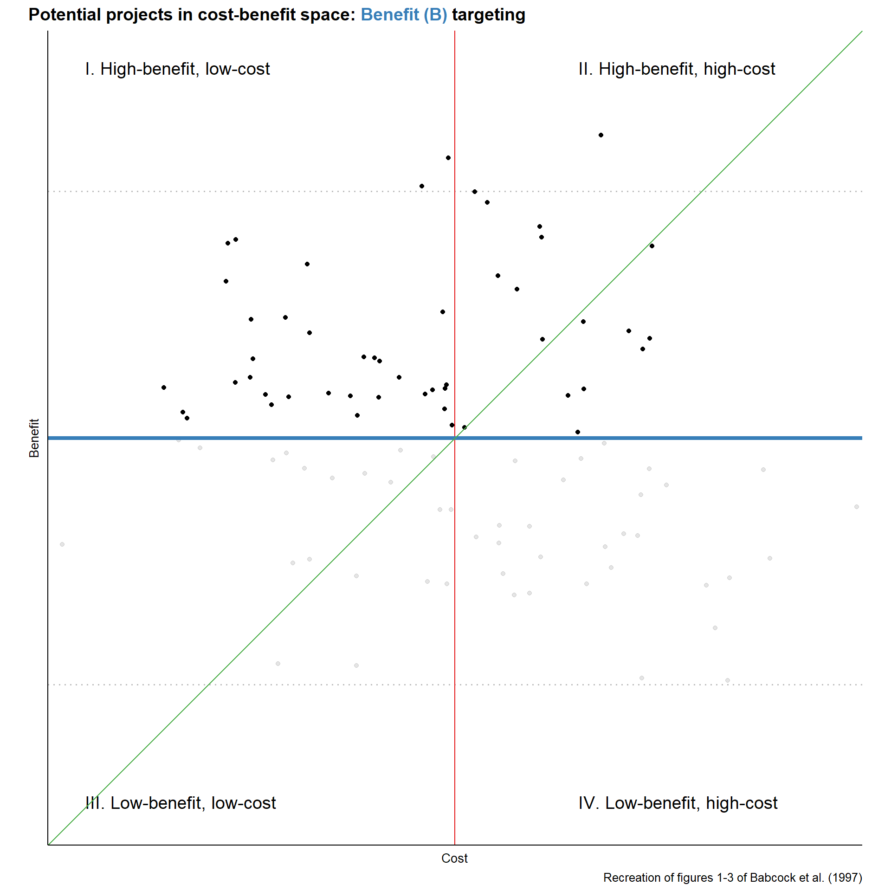
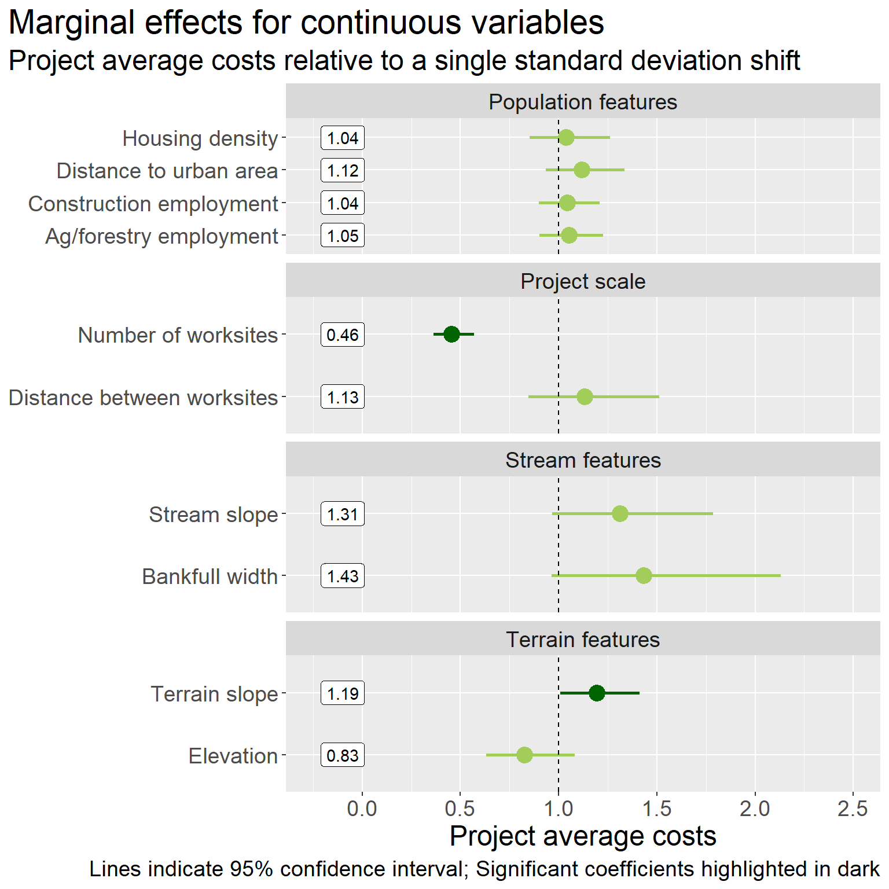
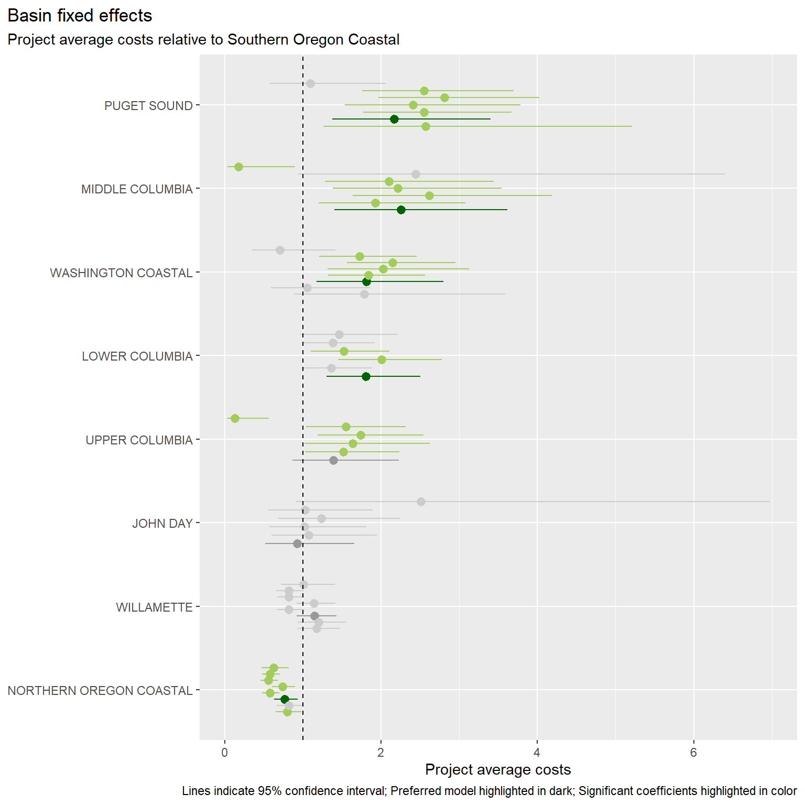
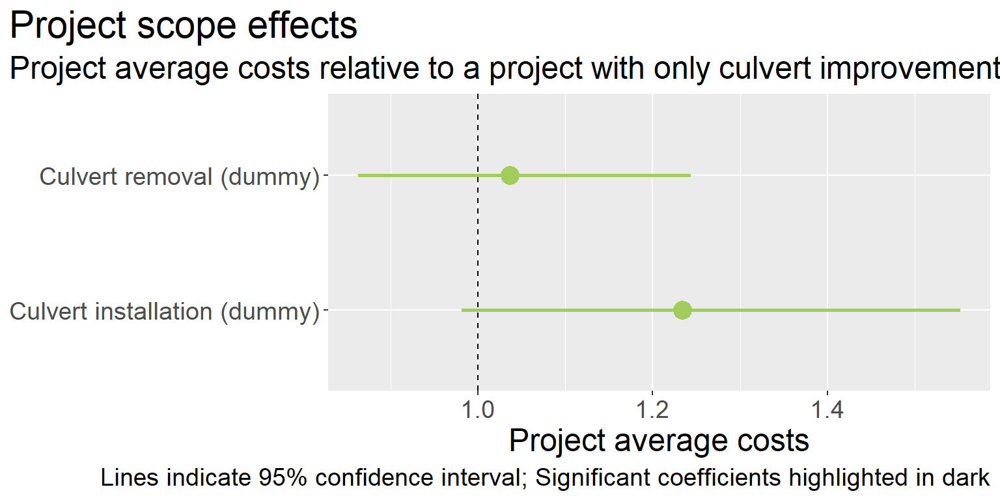
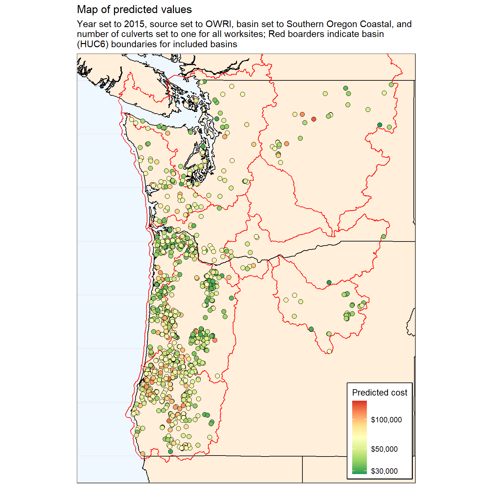
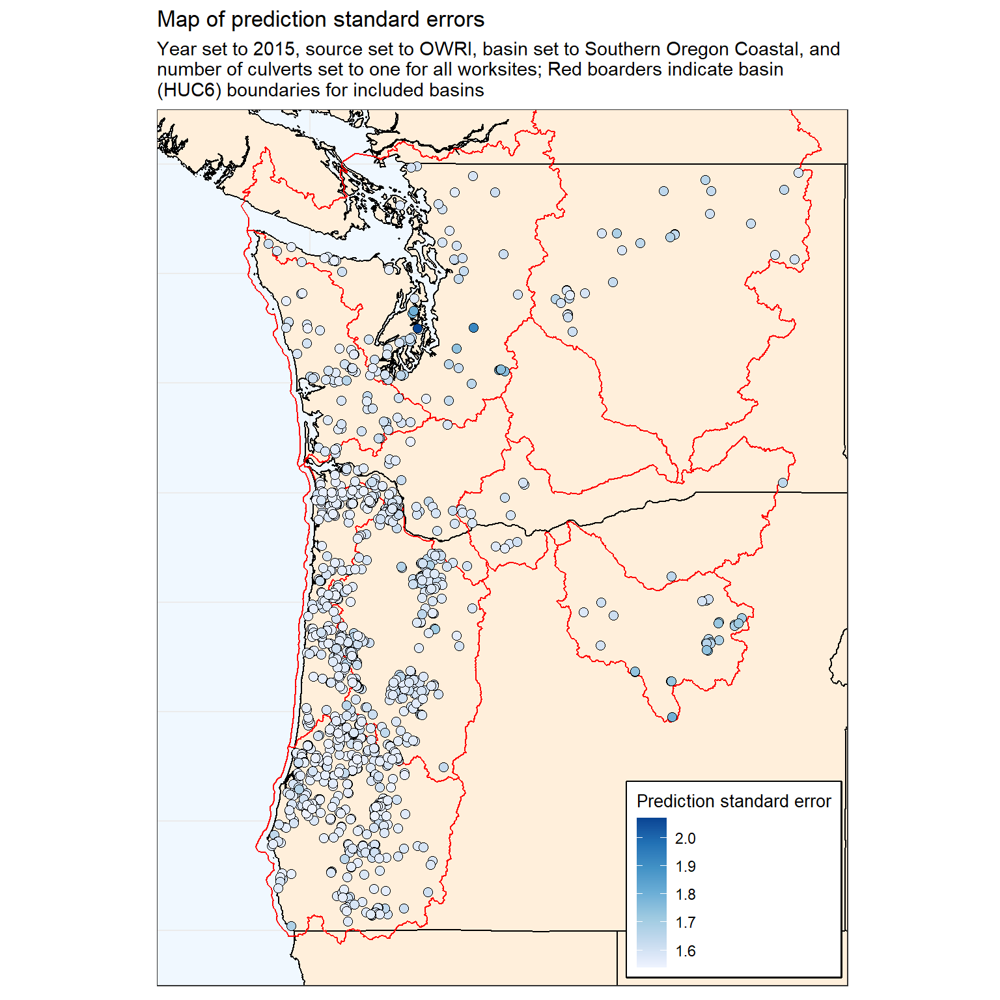
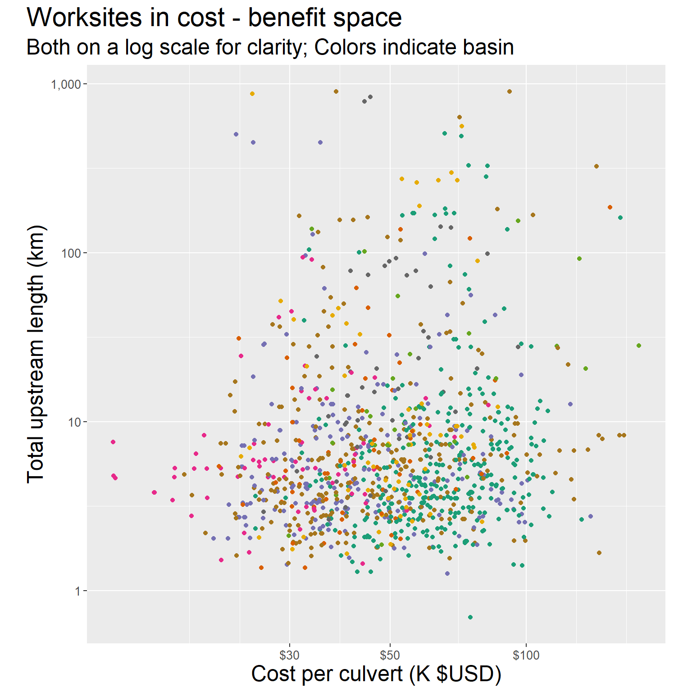
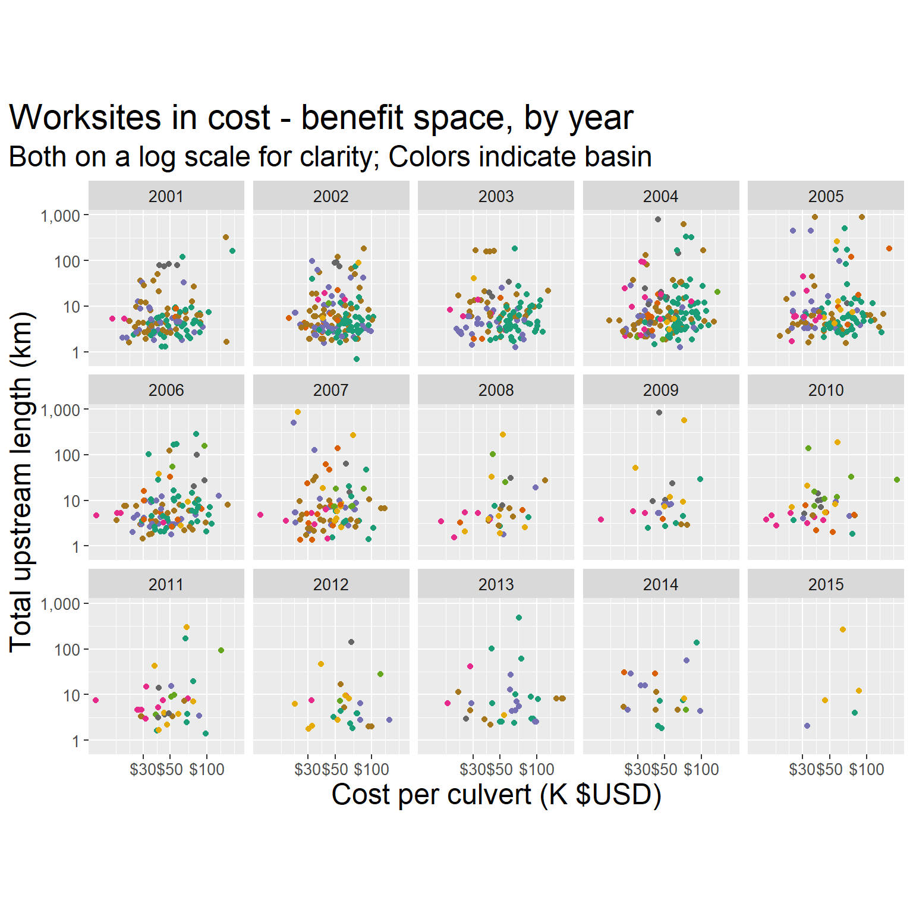
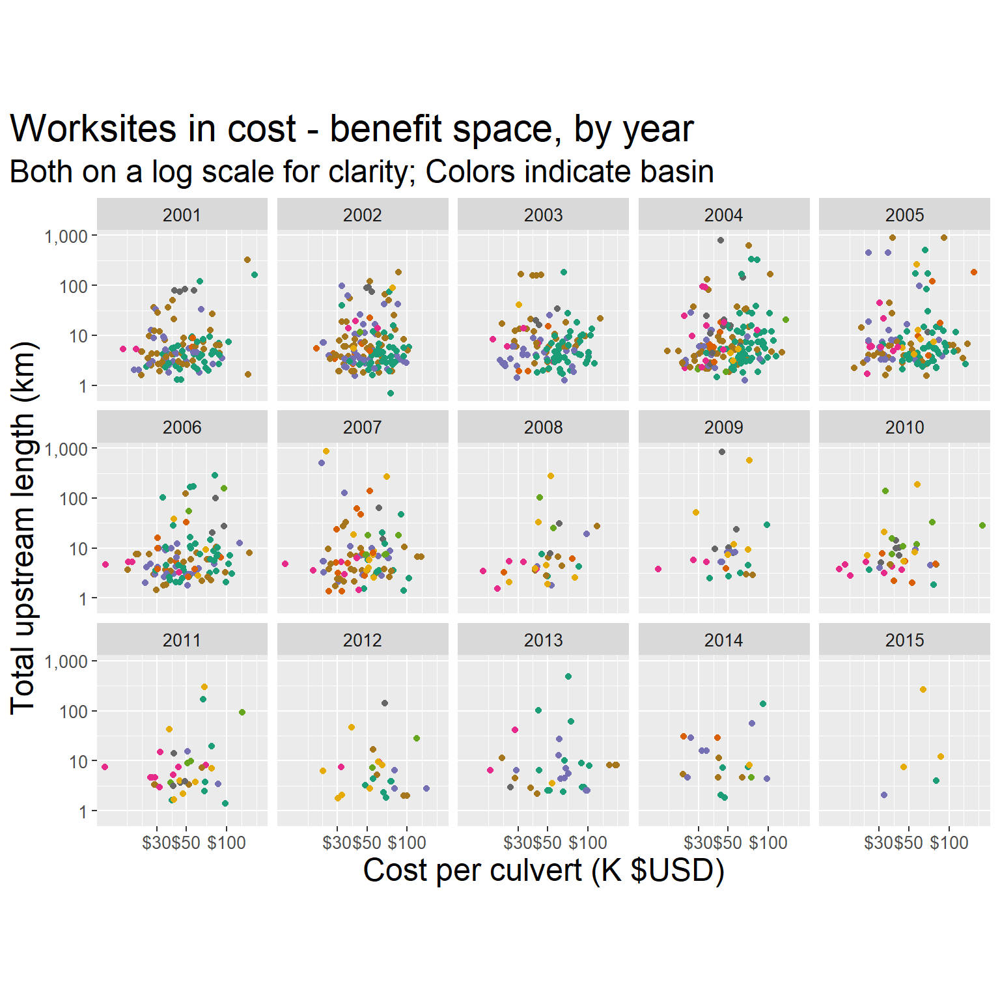

Culvert Cost Models with Spatially Explicit Data
B. Van Deynze
January 07, 2021
Incorporating costs in conservation planning
Niche: use of cost data in conservation plans
- Just as benefits, variability in costs can be large
- Including spatial variability and variability across scope and scale of project
- Understanding this variability can improve planning outcomes
- Including spatial variability and variability across scope and scale of project
Key cites
Babcock et al. 1997: https://doi.org/10.2307/3147171
- Describes relative efficiency of management rules under different joint distributions of costs and benefits
- Alternative targeting instruments considered incl. cost-targeting, benefit-targeting, and ratio-targeting (cost per benefit targeting)
- Relative variability of benefits and costs, and correlation between the two, determine effects of sub-optimal targeting

Naidoo et al. 2006: https://doi.org/10.1016/j.tree.2006.10.003
- Types of costs: acquisition, management, transaction (and opportunity, damage costs)
- (Can be continuous or one-off)
- (Can be continuous or one-off)
- Often based on non-monetary proxies
- Most often area
- Sometimes weighted but in often arbitrary ways
- Efficiency gains from incorporating costs
- Most often area
Gap
- Past looks at culverts have focused on benefits and used simplified cost models
- Past looks at conservation costs have focused on land acquisition costs rather than restoration efforts
- Unique features of culvert improvement in PNW: upstream land access model, lots of streams/roads, large variation in slope and stream size
- Unique features of culvert improvement in PNW: upstream land access model, lots of streams/roads, large variation in slope and stream size
- Timely b/c Washington culvert case
Research approach
- Examine variability in cost levels and drivers of costs across culvert projects in PNW using statistical model
- Compare levels and variability of costs to (possibly several) benefit measures
- Apply model to extant culverts to compare costs/benefit distributions over…
- Space: where are high benefit, low cost culverts?
- Observed projects vs. all culverts: what kind of decision rule is distribution of projects consistent with?
- Space: where are high benefit, low cost culverts?
RQ1: How much variability is there in costs for culvert improvements?
- Over space?
- For observed projects vs. potential projects?
- Relative to variability in benefits? (And implications for planning rules/future research)
RQ2: What are drivers of culvert improvement costs?
- Economic drivers: economies of scale, transaction costs
- Geophysical drivers: stream features, terrain features
- And are these drivers also drivers of benefits (i.e. upstream habitat quality for target species)?
Data description
The unit of observation in our data is a culvert worksite. These data include all unique worksites associated with a culvert action in the PNSHP data between 2001 and 2015. Each worksite is associated with a project, a set of geographic coordinates, and the number of culverts at the site. Projects are associated with a year, a reporting source, and a unique cost. We also calculate the number of culverts associated with the project (methods found here). Note that a project may be associated with multiple related worksites, though 70% of worksites are uniquely identified to a project.
Dependent and explanatory variables included in the empirical model are described below, including a brief justification for inclusion. A more in-depth exploration of these variables can be found in this report.
| Variable | Mean | Std. dev. | Number of levels |
|---|---|---|---|
| Cost per culvert ($USD2019) | 82,600 | 93,800 | |
| Number of worksites (count) | 1.48 | 0.958 | |
| Distance between worksites (m) | 507 | 1,360 | |
| Stream slope (%) | 0.0458 | 0.0406 | |
| Bankfull width (m) | 7.56 | 5.41 | |
| Terrain slope (deg) | 27.3 | 12 | |
| Housing density (units per sq. km) | 5.96 | 24.7 | |
| Construction employment (jobs) | 3,010 | 5,140 | |
| Ag/forestry employment (jobs) | 778 | 534 | |
| Distance to urban area (m) | 45,200 | 31,800 | |
| Paved road | 2 | ||
| Road speed class | 6 | ||
| Land cover class | 6 | ||
| Basin | 9 | ||
| Year | 15 | ||
| Reporting source | 6 |
Cost estimates
Cost per culvert ($USD, 2019) is our primary dependent variable. This variable can also be interpreted as the project average costs at the work site. This variable is constructed by dividing the provided project costs by the number of culverts associated with the project.
Stream hydrological features
- Stream slope (% grade): slope of stream at road crossing can require more expensive crossing design; identified via COMID matching with NHDPlus attributes.
- Bankfull width (m): bankfull width is the preferred measure of stream width at road crossing, accounting for potential width during high-water events; identified via COMID matching with NHDPlus attributes.
Road features
- Road paved (indicator): modification of a paved road is more expensive; may also proxy for higher traffic volumes; measured via HERE road data for nearest object.
- Road speed class (categorical): wider roads with more traffic are expected to be more expensive; measured via HERE road data for nearest object; classes range from 2 (fastest) to 7 (slowest).
| Classification | Value | Description |
|---|---|---|
| Speed category | 1 | > 130 kph / > 80 mph |
| 2 | 101-130 kph / 65-80 mph | |
| 3 | 91-100 kph / 55-64 mph | |
| 4 | 71-90 kph / 41-54 mph | |
| 5 | 51-70 kph / 31-40 mph | |
| 6 | 31-50 kph / 21-30 mph | |
| 7 | 11-30 kph / 6-20 mph | |
| 8 | < 11 kph / < 6 mph |
Terrain features
Terrain slope (degrees): steeper terrain is expected to require more expensive projects; measured by the
GTOPO30 grid cell the worksite falls inslope recorded for the catchment the stream is associated with, as opposed to the stream slope.Land cover (categorical): different land covers may be associated more expensive projects (e.g. less accessible sites in forest, difficult soils in welands, etc.); identified via cover with worksite coordinates and NLCD land cover layer for nearest available year; here we use the broader NLCD Group definition rather than the more detailed classification (see below).
Elevation (m): mean elevation in meters in NHDPlus catchment.
| Group | Value | Classification | Description |
|---|---|---|---|
| Barren | 31 | Barren land (rock/sand/clay) | Areas of bedrock, desert pavement, scarps, talus, slides, volcanic material, glacial debris, sand dunes, strip mines, gravel pits and other accumulations of earthen material. Generally, vegetation accounts for less than 15% of total cover. |
| Developed | 21 | Developed, open space | Areas with a mixture of some constructed materials, but mostly vegetation in the form of lawn grasses. Impervious surfaces account for less than 20% of total cover. These areas most commonly include large-lot single-family housing units, parks, golf courses, and vegetation planted in developed settings for recreation, erosion control, or aesthetic purposes. |
| Developed | 22 | Developed, low intensity | Areas with a mixture of constructed materials and vegetation. Impervious surfaces account for 20% to 49% percent of total cover. These areas most commonly include single-family housing units. |
| Developed | 23 | Developed, medium intensity | Areas with a mixture of constructed materials and vegetation. Impervious surfaces account for 50% to 79% of the total cover. These areas most commonly include single-family housing units. |
| Developed | 24 | Developed high intensity | Highly developed areas where people reside or work in high numbers. Examples include apartment complexes, row houses and commercial/industrial. Impervious surfaces account for 80% to 100% of the total cover. |
| Forest | 41 | Deciduous forest | Areas dominated by trees generally greater than 5 meters tall, and greater than 20% of total vegetation cover. More than 75% of the tree species shed foliage simultaneously in response to seasonal change. |
| Forest | 42 | Evergreen forest | Areas dominated by trees generally greater than 5 meters tall, and greater than 20% of total vegetation cover. More than 75% of the tree species maintain their leaves all year. Canopy is never without green foliage. |
| Forest | 43 | Mixed forest | Areas dominated by trees generally greater than 5 meters tall, and greater than 20% of total vegetation cover. Neither deciduous nor evergreen species are greater than 75% of total tree cover. |
| Herbaceous | 71 | Grassland/herbaceous | Areas dominated by gramanoid or herbaceous vegetation, generally greater than 80% of total vegetation. These areas are not subject to intensive management such as tilling, but can be utilized for grazing. |
| Planted-cultivated | 81 | Pasture/hay-areas of grasses, legumes, or grass | Legume mixtures planted for livestock grazing or the production of seed or hay crops, typically on a perennial cycle. Pasture/hay vegetation accounts for greater than 20% of total vegetation. |
| Planted-cultivated | 82 | Cultivated crops | Areas used for the production of annual crops, such as corn, soybeans, vegetables, tobacco, and cotton, and also perennial woody crops such as orchards and vineyards. Crop vegetation accounts for greater than 20% of total vegetation. This class also includes all land being actively tilled. |
| Shrubland | 52 | Shrub/scrub | Areas dominated by shrubs; less than 5 meters tall with shrub canopy typically greater than 20% of total vegetation. This class includes true shrubs, young trees in an early successional stage or trees stunted from environmental conditions. |
| Water | 11 | Open water | Areas of open water, generally with less than 25% cover of vegetation or soil. |
| Water | 12 | Perennial ice/snow | Areas characterized by a perennial cover of ice and/or snow, generally greater than 25% of total cover. |
| Wetlands | 90 | Woody wetlands | Areas where forest or shrubland vegetation accounts for greater than 20% of vegetative cover and the soil or substrate is periodically saturated with or covered with water. |
| Wetlands | 95 | Emergent herbaceous wetlands | Areas where perennial herbaceous vegetation accounts for greater than 80% of vegetative cover and the soil or substrate is periodically saturated with or covered with water. |
Scale and scope controls
- Number of worksites associated with project (count): addressing multiple culverts under the same project may provide scale benefits, but might also increase complexity; measured via PNSHP database.
- Distance between project worksites (m): more dispersed worksites under a single project may increase project costs due to increased transportation costs (and time); measured as the total euclidean distance between worksites for multiple worksite projects. This variable is interacted with the number of worksites to allow flexible corrdination/scale effects.
- Action type (categorical): PNSHP distinguishes between culvert removals and culvert installations, in addition to culvert improvements (the dominate category); we expect removals to be cheapest, followed by improvements and installations; dummies are included when a project includes one or more culverts flagged as either removals or installations.
Fixed effects
- Year: the year the project was completed
- Basin: the basin (HUC6) where the worksite is located
- Reporting source: the reporting source for the project
Simple correlations across variables
Here we present a couple measures of correlation between potential continuous explanatory variables. The figure below show provides Pearson’s correlation coefficients for each pair of continuous explanatory variables included in the initial models, along side the dependent variable. Also included is the Variance Inflation Factor for each variable as calculated when all presented variables are included in a simple log-linear model, with cost per culvert as the dependent variable. Because of previously mentioned high correlation between housing density and population density, we include only housing density.

It looks like distance between worksites and the number of culverts is positively correlated, and both are negatively correlated with average project costs. We would expect distance to increase costs but the number of culverts to decrease costs (due to economies of scale), all else equal. Disentangling these effects should be possible with multiple regression.
Stream slope is negatively correlated with bankfull width, which means wider streams tend to be less steep. Stream slope is also positively correlated with terrain slope, as mentioned earlier. None of the three are strongly correlated with costs.
Finally, the two employment variables are positively correlated, and construction employment is positively correlated with housing density. Ag/forestry employment is weakly positively correlated with measures that indicate more rugged terrain such as stream and terrain slope. Housing density and to a lesser degree construction employment are positively correlated with costs.
No variables have particularly large VIFs, suggesting little potential for error-inflating multicollinearity. (A large VIF indicates that the variable is strongly correlated with the other variables in the model, leading to inflated standard errors and limiting the model’s usefulness for prediction or inference.)
Estimation
We estimate log-linear models estimated via OLS, with the average project cost as the dependent variable and the worksite as the unit of observation. Stream slope and bankfull width are interacted in this specification. Recommendations in culvert engineering reports indicate that more expensive culvert designs are particularly necessary when both of these variables are extreme, and an interaction term can capture this effect.
In addition to the fully specified model (mod_full), we present nine alternative models that include different fixed effects configurations or only sub-samples of the data focused on basin or reporting source criteria. For basins, we provide results estimated on a “core” group representing the five most frequently represented basins (Washington Coastal, Puget Sound, Southern Oregon Coastal, Northern Oregon Coastal, Willamette). Finally, we also estimate the model on only projects reported by OWRI and WA RCO, to examine how the two sources who report the most projects influence the overall results.
The resulting coefficients for the fixed effects and categorical variables, when exponentiated, can be interpreted as the ratio of average costs for that group relative those of the base group. Results for continuous variables are presented as exponentiated average marginal effect of a single standard deviation change, which can be interpreted as the ratio of costs relative to a worksite with a standard deviation lower for the variable.
Coefficient estimates
| Term | mod_full | mod_nofe | mod_nofe_nobasin | mod_nofe_nosource | mod_nofe_noyear | mod_nofe_onlybasin | mod_nofe_onlysource | mod_nofe_onlyyear | mod_basins_core | mod_sources_core |
|---|---|---|---|---|---|---|---|---|---|---|
| Intercept |
9.77*** (0.21) |
10.2*** (0.154) |
9.81*** (0.17) |
9.94*** (0.216) |
10*** (0.199) |
10.3*** (0.206) |
10.1*** (0.149) |
9.68*** (0.174) |
9.7*** (0.184) |
9.96*** (0.201) |
| Stream slope |
-2.41 (1.88) |
-3.46* (2.02) |
-1.94 (1.86) |
-3.16 (2) |
-2.29 (1.91) |
-2.93 (2.02) |
-1.7 (1.89) |
-3.9** (1.97) |
-5.59** (2.33) |
-1.18 (3.06) |
| Bankfull width |
-0.00164 (0.00626) |
0.00089 (0.00735) |
-0.000173 (0.00625) |
-0.00287 (0.00662) |
0.00027 (0.00636) |
-0.00141 (0.0067) |
0.00217 (0.00641) |
-0.00179 (0.00706) |
-0.00308 (0.00747) |
0.00355 (0.00865) |
| Stream slope X bankfull width |
0.762* (0.411) |
1.07** (0.417) |
0.781** (0.397) |
0.895** (0.428) |
0.713* (0.41) |
0.859** (0.428) |
0.691* (0.398) |
1.12*** (0.415) |
1.61*** (0.497) |
0.723 (0.684) |
| Road paved (dummy) |
0.24** (0.116) |
0.32*** (0.119) |
0.233** (0.118) |
0.248** (0.115) |
0.292** (0.114) |
0.306*** (0.114) |
0.28** (0.116) |
0.285** (0.121) |
0.24* (0.127) |
0.334** (0.157) |
| Road speed class: 3 |
0.601* (0.331) |
0.555* (0.327) |
0.618* (0.331) |
0.703** (0.324) |
0.56* (0.327) |
0.628* (0.328) |
0.591* (0.33) |
0.624* (0.318) |
0.788** (0.346) |
0.603 (0.455) |
| Road speed class: 4 |
0.435 (0.29) |
0.596** (0.29) |
0.483* (0.285) |
0.406 (0.315) |
0.389 (0.282) |
0.408 (0.306) |
0.45 (0.275) |
0.524* (0.311) |
0.59* (0.347) |
0.41 (0.344) |
| Road speed class: 5 |
0.398*** (0.133) |
0.404*** (0.136) |
0.428*** (0.135) |
0.426*** (0.134) |
0.372*** (0.129) |
0.408*** (0.13) |
0.409*** (0.132) |
0.416*** (0.14) |
0.454*** (0.147) |
0.268 (0.173) |
| Road speed class: 6 |
0.237* (0.133) |
0.5*** (0.139) |
0.297** (0.134) |
0.231* (0.132) |
0.201 (0.131) |
0.195 (0.131) |
0.267** (0.133) |
0.453*** (0.141) |
0.449*** (0.159) |
0.435** (0.176) |
| Road speed class: 7 |
0.244*** (0.0898) |
0.352*** (0.0953) |
0.269*** (0.0897) |
0.276*** (0.093) |
0.268*** (0.0878) |
0.315*** (0.0915) |
0.295*** (0.0882) |
0.319*** (0.0955) |
0.295*** (0.104) |
0.174 (0.114) |
| Terrain slope |
0.00732** (0.00356) |
0.00914*** (0.00323) |
0.0047 (0.00319) |
0.0106*** (0.00371) |
0.00813** (0.00346) |
0.0124*** (0.00366) |
0.00478 (0.00311) |
0.00901*** (0.00323) |
0.0112*** (0.00381) |
0.000509 (0.00462) |
| Elevation |
-0.000301 (0.000217) |
0.0000751 (0.000148) |
-0.000269* (0.000144) |
-0.00002 (0.000221) |
-0.000357* (0.000216) |
-0.0000373 (0.000221) |
-0.00027* (0.000143) |
0.0000402 (0.000145) |
-0.000253 (0.00025) |
-0.0000529 (0.00024) |
| Land cover: Developed |
0.332*** (0.0776) |
0.426*** (0.0826) |
0.307*** (0.076) |
0.369*** (0.082) |
0.332*** (0.0783) |
0.421*** (0.083) |
0.303*** (0.0771) |
0.361*** (0.0813) |
0.355*** (0.0896) |
0.403*** (0.109) |
| Land cover: Herbaceous |
-0.0199 (0.133) |
-0.0502 (0.167) |
-0.00383 (0.139) |
-0.045 (0.133) |
-0.0449 (0.139) |
-0.0495 (0.14) |
-0.036 (0.144) |
-0.0524 (0.157) |
-0.0924 (0.172) |
0.0498 (0.219) |
| Land cover: Planted-cultivated |
0.475*** (0.163) |
0.438*** (0.163) |
0.524*** (0.158) |
0.411** (0.168) |
0.43** (0.168) |
0.364** (0.168) |
0.487*** (0.165) |
0.466*** (0.165) |
0.469*** (0.167) |
0.484** (0.188) |
| Land cover: Shrubland |
0.181 (0.13) |
0.184 (0.142) |
0.152 (0.128) |
0.154 (0.139) |
0.175 (0.128) |
0.149 (0.139) |
0.148 (0.126) |
0.17 (0.139) |
0.133 (0.177) |
0.121 (0.196) |
| Land cover: Wetlands |
0.0883 (0.134) |
0.207 (0.138) |
0.108 (0.137) |
0.0626 (0.138) |
0.0595 (0.128) |
0.0843 (0.131) |
0.0818 (0.132) |
0.131 (0.145) |
0.046 (0.157) |
0.205 (0.169) |
| Housing density |
0.000639 (0.00179) |
0.00334* (0.00175) |
0.00103 (0.00177) |
0.000997 (0.00185) |
0.000631 (0.0017) |
0.00109 (0.0018) |
0.000972 (0.00166) |
0.00316* (0.00184) |
0.00317* (0.00188) |
0.00179 (0.00388) |
| Ag/forestry employment |
0.0000475 (0.0000738) |
0.0000939 (0.0000705) |
0.0000389 (0.0000654) |
0.000116 (0.0000758) |
0.0000778 (0.000073) |
0.000147* (0.0000753) |
0.0000682 (0.0000655) |
0.0001 (0.0000707) |
0.000116 (0.0000808) |
0.000154* (0.0000862) |
| Construction employment |
0.00000408 (0.0000073) |
0.0000153** (0.0000069) |
0.000011* (0.00000651) |
-0.0000024 (0.0000079) |
0.00000495 (0.00000733) |
-0.00000243 (0.00000746) |
0.0000121* (0.00000689) |
0.0000127* (0.00000716) |
0.0000141* (0.00000748) |
0.0000116 (0.00000956) |
| Distance to urban area |
0.00000173 (0.00000143) |
0.00000226** (0.00000109) |
0.0000019* (0.00000103) |
-0.00000114 (0.00000142) |
0.00000137 (0.0000014) |
-0.0000012 (0.00000141) |
0.00000173* (0.00000101) |
0.00000177 (0.0000011) |
0.00000154 (0.00000153) |
-0.000000495 (0.00000163) |
| Number of worksites |
-0.435*** (0.0619) |
-0.573*** (0.0661) |
-0.505*** (0.061) |
-0.421*** (0.061) |
-0.454*** (0.0636) |
-0.436*** (0.0632) |
-0.535*** (0.0626) |
-0.542*** (0.0635) |
-0.544*** (0.0689) |
-0.599*** (0.0742) |
| Distance between worksites |
-0.0000252 (0.0000709) |
-0.000071 (0.0000733) |
-0.0000452 (0.0000718) |
-0.0000263 (0.0000743) |
-0.0000253 (0.000061) |
-0.0000381 (0.000064) |
-0.0000462 (0.0000625) |
-0.000047 (0.000083) |
-0.0000347 (0.0000857) |
-0.0000836 (0.0000811) |
| Number of worksites X distance |
0.0000476*** (0.0000148) |
0.0000734*** (0.000015) |
0.0000598*** (0.0000154) |
0.0000469*** (0.0000149) |
0.0000499*** (0.0000137) |
0.0000498*** (0.0000139) |
0.0000637*** (0.0000146) |
0.0000666*** (0.0000162) |
0.0000597*** (0.0000189) |
0.0000766*** (0.0000176) |
| Culvert installation (dummy) |
0.174 (0.12) |
0.89*** (0.112) |
0.175 (0.119) |
0.508*** (0.115) |
0.371*** (0.114) |
0.684*** (0.109) |
0.406*** (0.111) |
0.682*** (0.125) |
0.711*** (0.159) |
0.239 (0.478) |
| Culvert removal (dummy) |
0.0106 (0.0935) |
-0.221** (0.0893) |
0.000751 (0.0947) |
-0.126 (0.0908) |
0.0979 (0.0906) |
-0.0677 (0.0888) |
0.104 (0.0917) |
-0.274*** (0.0907) |
-0.367*** (0.0971) |
0.0422 (0.104) |
| Project source: BLM |
0.912*** (0.122) |
‒ |
0.947*** (0.114) |
‒ |
0.948*** (0.123) |
‒ |
0.974*** (0.115) |
‒ | ‒ | ‒ |
| Project source: HABITAT WORK SCHEDULE |
1.19*** (0.277) |
‒ |
1.57*** (0.198) |
‒ |
1.05*** (0.254) |
‒ |
1.54*** (0.179) |
‒ | ‒ | ‒ |
| Project source: REO |
0.954*** (0.0998) |
‒ |
0.995*** (0.0913) |
‒ |
0.967*** (0.0965) |
‒ |
1.01*** (0.0896) |
‒ | ‒ | ‒ |
| Project source: SRFBD |
1.07*** (0.225) |
‒ |
1.32*** (0.199) |
‒ |
0.884*** (0.217) |
‒ |
1.19*** (0.191) |
‒ | ‒ | ‒ |
| Project source: WA RCO |
0.505** (0.207) |
‒ |
0.892*** (0.14) |
‒ |
0.379** (0.187) |
‒ |
0.864*** (0.124) |
‒ | ‒ | ‒ |
| Year: 2002 |
0.247** (0.122) |
‒ |
0.265** (0.121) |
0.447*** (0.124) |
‒ | ‒ | ‒ |
0.499*** (0.122) |
0.556*** (0.126) |
0.398*** (0.143) |
| Year: 2003 |
0.206 (0.132) |
‒ |
0.227* (0.134) |
0.493*** (0.132) |
‒ | ‒ | ‒ |
0.597*** (0.134) |
0.624*** (0.137) |
0.468*** (0.166) |
| Year: 2004 |
0.604*** (0.116) |
‒ |
0.665*** (0.117) |
0.758*** (0.119) |
‒ | ‒ | ‒ |
0.891*** (0.125) |
0.881*** (0.135) |
0.576*** (0.14) |
| Year: 2005 |
0.304** (0.122) |
‒ |
0.326*** (0.124) |
0.462*** (0.129) |
‒ | ‒ | ‒ |
0.573*** (0.133) |
0.608*** (0.137) |
0.289* (0.148) |
| Year: 2006 |
0.357** (0.143) |
‒ |
0.377*** (0.146) |
0.485*** (0.146) |
‒ | ‒ | ‒ |
0.594*** (0.147) |
0.645*** (0.153) |
0.414** (0.17) |
| Year: 2007 |
0.487*** (0.143) |
‒ |
0.525*** (0.141) |
0.694*** (0.146) |
‒ | ‒ | ‒ |
0.842*** (0.147) |
0.667*** (0.157) |
0.651*** (0.177) |
| Year: 2008 |
-0.061 (0.258) |
‒ |
-0.109 (0.261) |
0.461* (0.25) |
‒ | ‒ | ‒ |
0.642** (0.261) |
0.666** (0.307) |
0.709** (0.357) |
| Year: 2009 |
0.419* (0.221) |
‒ |
0.362* (0.209) |
0.985*** (0.234) |
‒ | ‒ | ‒ |
1.1*** (0.21) |
1.11*** (0.246) |
0.541 (0.44) |
| Year: 2010 |
0.154 (0.231) |
‒ |
0.131 (0.228) |
0.531** (0.24) |
‒ | ‒ | ‒ |
0.826*** (0.225) |
0.839** (0.335) |
0.617* (0.334) |
| Year: 2011 |
0.0917 (0.21) |
‒ |
0.0902 (0.208) |
0.589*** (0.213) |
‒ | ‒ | ‒ |
0.934*** (0.215) |
1*** (0.246) |
0.432 (0.303) |
| Year: 2012 |
-0.0353 (0.27) |
‒ |
-0.00697 (0.254) |
0.34 (0.278) |
‒ | ‒ | ‒ |
0.638** (0.26) |
0.665** (0.291) |
0.734* (0.394) |
| Year: 2013 |
0.114 (0.264) |
‒ |
0.114 (0.262) |
0.205 (0.272) |
‒ | ‒ | ‒ |
0.227 (0.282) |
0.298 (0.287) |
-0.109 (0.298) |
| Year: 2014 |
0.173 (0.263) |
‒ |
0.178 (0.241) |
0.231 (0.26) |
‒ | ‒ | ‒ |
0.224 (0.244) |
0.424* (0.241) |
0.14 (0.274) |
| Year: 2015 |
0.851*** (0.307) |
‒ |
0.866** (0.346) |
1.58*** (0.288) |
‒ | ‒ | ‒ |
1.81*** (0.378) |
1.81*** (0.392) |
‒ |
| Basin: JOHN DAY |
0.0848 (0.332) |
‒ | ‒ |
0.27 (0.332) |
0.226 (0.333) |
0.461 (0.331) |
‒ | ‒ | ‒ | ‒ |
| Basin: LOWER COLUMBIA |
0.409** (0.187) |
‒ | ‒ |
0.154 (0.187) |
0.507*** (0.184) |
0.269 (0.184) |
‒ | ‒ | ‒ | ‒ |
| Basin: MIDDLE COLUMBIA |
0.346 (0.277) |
‒ | ‒ |
0.311 (0.248) |
0.46* (0.276) |
0.437* (0.255) |
‒ | ‒ | ‒ | ‒ |
| Basin: NORTHERN OREGON COASTAL |
-0.295** (0.124) |
‒ | ‒ |
-0.571*** (0.123) |
-0.31** (0.124) |
-0.559*** (0.125) |
‒ | ‒ | ‒ | ‒ |
| Basin: PUGET SOUND |
0.569** (0.243) |
‒ | ‒ |
0.834*** (0.207) |
0.684*** (0.236) |
0.96*** (0.195) |
‒ | ‒ | ‒ | ‒ |
| Basin: UPPER COLUMBIA |
0.181 (0.276) |
‒ | ‒ |
0.336 (0.256) |
0.351 (0.271) |
0.479* (0.249) |
‒ | ‒ | ‒ | ‒ |
| Basin: WASHINGTON COASTAL |
0.405* (0.221) |
‒ | ‒ |
0.517*** (0.184) |
0.54** (0.217) |
0.704*** (0.171) |
‒ | ‒ | ‒ | ‒ |
| Basin: WILLAMETTE |
0.0902 (0.132) |
‒ | ‒ |
-0.269** (0.123) |
0.106 (0.131) |
-0.236* (0.123) |
‒ | ‒ | ‒ | ‒ |
| Adj. R2 | 0.388 | 0.24 | 0.377 | 0.328 | 0.374 | 0.303 | 0.358 | 0.279 | 0.294 | 0.243 |
| AIC | 3514.5 | 3757.2 | 3529.1 | 3626.5 | 3529.5 | 3657.2 | 3552.1 | 3704.2 | 3286.4 | 2326.1 |
| BIC | 3790.9 | 3895.4 | 3764.6 | 3877.3 | 3734.3 | 3836.4 | 3715.9 | 3914.1 | 3491.2 | 2512.4 |
| N | 1235 | 1235 | 1235 | 1235 | 1235 | 1235 | 1235 | 1235 | 1091 | 779 |
| * p < 0.1, ** p < 0.05, *** p < 0.01; Heteroskedasticity-consistent standard errors in parentheses (HC3) |
Model fit discussion
The full model has an adjusted R-squared of 0.388, indicating a decent model fit. The version of the model with no fixed effects has an adjusted R-squared of 0.24, indicating that a significant amount of variability is explained by the additional explanatory variables. When fixed effect categories are removed, we can check which fixed effects explain the most variation relative to each other. It looks like reporting source accounts for the most variation, followed by basin then year, based on the relative R-squareds of models where each is removed and where each is included on its own.
We can also compare AIC and BIC; the model with only fixed effects for reporting source is preferred on the basis of BIC, which includes a stronger penalty for the number of estimated parameters, while the full model is preferred on the basis of AIC. We use the full model in what proceeds as the preferred model.
When the model is fit only on culverts in the “core” basins or sources, adjusted R-squared falls dramatically. This may suggest that information from the additional sources and outside the core basins improves the fit of the model.
Model visualizations
Slope and bankfull width interaction effect
To demonstrate the nuance in how bankfull width and slope jointly influence costs, we present predicted cost contours across both variables.


Worksites are distributed along a slope - bankfull width convex curve, with few projects both high slope and high width. This pattern mirrors the cost contours over slope - bankfull width space. Comparing the observed projects to other culverts in the Washington or Oregon inventories will show whether this relationship exists for all culverts or whether projects were selected along the cost curve. That is, would projects that did not occur exist in the upper-right space?
Number of worksites and total distance interaction effect

We can repeat the exercise for the number of worksites and total distance between worksites to examine the trade-off between economies of scale from grouping multiple worksites under one project and increased costs in coordination as proxied by total distance between sites. The contours of this cost surface can be interpreted as the distance limit for which adding an additional worksite to a project is associated with economies or dis-economies of scale.
For example, consider a potential project with one worksite (indicated by X) considering expanding to include a second worksite located 5km away (indicated by an *). Because the second worksite would increase the total distance between worksites below the distance where the cost contour (indicated by the solid line, with dashed lines indicating a 95% c.i.) crosses two worksites, expanding the project would be associated with economies of scale.
That these contours tend to be quite steep initially indicates strong potential for economies of scale when opportunities to group nearby worksites under a single project arise. As the number of worksites increases, these contours flatten, indicating that the maximum distance for an efficient additional worksite drops quickly.
Continuous variables
To display how costs vary across the continuous explanatory variables, we plot average marginal effects. These are scaled to a standard deviation change for each variable. Average marginal effects are calculated with other variables held at their means, which is most relevant for slope and bankfull width for which the model allows an interaction effect. The resulting estimate is exponentiated so that it can be interpreted as the expected ratio of costs resulting from a standard deviation change in the continuous variable.

A standard deviation increase in number of worksites is associated with 46% lower average costs in the preferred model when other variables, most importantly distance between worksites, are held at their means. On the other hand, a standard deviation increase in distance between worksites is associated with average costs 13% higher, though this marginal effect is not statistically different from zero. This conflict is at the core of the managerial tradeoffs to consider when grouping worksites under a single project, as described in the preceeding section. That the negative association between costs and the number of worksites exceeds the positive association with total distance for the mean project suggests that there are unexploited opportunities for economies of scale.
The average marginal effects for all population features are insignificant in the preferred model. However, in some of the alternative models, housing density and distance to urban area has a slight positive association with costs. The housing density effect might be evidence of increased access costs due to negotiating with multiple landowners, while the distance association may be evidence of increased costs due to lack of access to materials or labor. We are in the process of gathering improved proxies for each of these potential mechanisms.
Bankfull width and stream slope both have positive associations in the preferred models. A standard deviation increase in either is associated with about fifty percent higher average costs when the other is held at its mean. As seen in the earlier figure and raw coefficients, this effect is driven largely by the interaction term in the model.
Finally, a standard deviation increase in the terrain slope of the catchment the worksite is located in is associated with 19% higher costs. That is, culverts in hillier or more mountainous areas are more expensive to improve. On the otherhand, higher eleveations are associated with lower costs, though this relationship is not statistically significant.
Fixed effects and categorical variables
We can examine the fixed effect estimates to compare relative expected costs across groups. We do this by exponentiating the point estimates. The resulting value can be interpreted as the ratio of costs in a given group relative to a base group.
Year effects

For the preferred model, project average costs are as much as twice as high than 2001 levels between 2002 and 2007, when other factors are controlled for. In years that follow, costs return to around 2001 levels. In 2015, the last year of the sample, costs are nearly two-and-a-half times 2001 average costs, though this effect is weakly estimated and based on only a limited number of observations from this year.
Reporting source effects

BLM and REO have tightly estimated positive associations with costs, around two-and-a-half times costs observed from OWRI. OWRI projects have the lowest average costs, followed by WA RCO costs which are associated with 66% higher costs. Projects reported by Habitat Work Schedule and SRFBD coefficients estimated with less precision, but larger point levels than BLM and REO.
Basin effects

After controlling for other factors with the preferred model, projects in the Puget Sound and Lower Columbia basins have the highest average costs, followed by the Washington Coastal and Middle Columbia basins. In general, the pattern seems to be that projects in Oregon basins have lower average costs, with the Willamette and both Oregon Coastal basins coming in with the lowest costs.
Land cover effects

Cultivated cropland and developed land covers have positive associations with costs, relative to worksites found in areas with forest land cover. Shrubland also has a positive association, though the relationship is not statistically significant. The remaining land covers, wetlands and herbaceous, do not appear to have different costs than the forest land cover baseline.
Road feature effects

There appears to be a positive association between road speed class and project costs, where the largest, most heavily trafficked roads are associated with higher worksite costs. The point estimates for the largest speed class have large standard errors, likely due to lower representation of these roads in the sample.
Scope and scale effects

There is some evidence from the models that installations are more expensive than improvements (the baseline) and removals, though this association largely washes out when the full suite of fixed effects is included. This may indicate that distinctions between these categories in the data are loosely defined.
Residual and predicted value maps
In this section, we map both the residuals and predicted values for each in-sample worksite. Patterns may reveal areas where costs are more expensive, where missing explanatory variables may be effecting costs over a specific region. They also demonstrate how these models could be used to project costs for the full inventories of fish passage barriers documented by state agencies.

By looking at the map of residuals, we can examine where the model performs better or worse. Few obvsious patterns emerge. There seems to be some clustering of positive residuals in the Portland area, suggesting that costs are underestimated for that region. Otherwise, the residuals appear to be fairly well distributed.

The map of predicted values highlights areas where physical conditions (i.e. road, stream, and terrain features) have the largest impact on costs. By holding year, basin, reporting source, and project scale effects constant, we can identify where the remaining variables in the model predict higher or lower costs. Here, we see higher costs particularly in the Southern Oregon Coastal basin. At the mouth of the Columbia and around the Portland area, there appear to be clusters of lower cost projects. The John Day basin projects in Eastern Oregon also appear to have lower costs than other areas.

This map shows the standard errors on the cost predictions for each worksite in the sample. Darker points indicate increased uncertainty. Uncertainty appears to be the highest in the John Day and Puget Sound regions. This suggests that costs estimates are the least reliable for these areas, and could be improved with more observations from these regions.
Finally, we present a number of summary statistics by basin for the predictions and metrics presented above.
| Basin | Mean Predicted Value | Predicted Value Coefficient of Variation | Mean Prediction Standard Error |
|---|---|---|---|
| JOHN DAY | 44,495 | 0.243 | 0.514 |
| WILLAMETTE | 51,881 | 0.364 | 0.460 |
| UPPER COLUMBIA | 52,546 | 0.464 | 0.482 |
| LOWER COLUMBIA | 52,759 | 0.328 | 0.455 |
| MIDDLE COLUMBIA | 52,975 | 0.344 | 0.468 |
| NORTHERN OREGON COASTAL | 54,515 | 0.355 | 0.450 |
| PUGET SOUND | 57,285 | 0.305 | 0.488 |
| WASHINGTON COASTAL | 61,858 | 0.311 | 0.461 |
| SOUTHERN OREGON COASTAL | 68,272 | 0.299 | 0.451 |
The mean predicted value by basin indicates basins where culverts are more or less expensive. Southern Oregon Coastal culvert worksites are the most expensive, while John Day basin worksites are the least expensive. The predicted value coefficient of variation shows where costs vary the most within a basin on a consistent scale. Costs vary the most within the Upper Columbia basin, and the least in the John Day basin. Finally, the mean prediction standard error shows where model uncertainty is highest. As observed on the map, John Day and Puget Sound basins have the largest prediction standard errors, while the Western Oregon basins (Northern and Southern Oregon Coastal, and the Lower Columbaia) have the smallest.
Benefit - cost visualizations
As a simple examination of what kind of decision rule might be in play for determining which culverts were selected, we plot as a benefit proxy total upstream length (in km) versus observed cost per culvert. Under a cost-targeting rule, all worksites would be to the left of a cost threshold, while for a benefit-targeting rule all would be above a benefit threshold. A benefit-cost ratio standard would be above an upward sloping line.
It should be acknowledged there are severe limitations to this application. Most obviously, without including data on un-attempted projects we are left assuming the total possible project space is “dense” (i.e. in any point in cost-benefit space we don’t observe a project, we assume a project there would be possible). This assumption can be addressed by incorporating data from state agency culvert inventories. Second, our benefits measure is rough at best, and alternative measures that account for upstream/downstream barriers as well as habitat conditions and species ranges may more realistically describe the decision space. Finally, in looking across projects from the full study area, we may miss heterogeneity in targeting rules across jurisdictions or regions. We partially address this final point by also examining the distributions of subsets of worksites by region and year.
 

No evidence that projects are selected on cost or benefit-cost ratio basis. It does somewhat appear that the observed projects follow a benefit targeting pattern with a fairly low benefit cut-off. For Lower Columbia, Upper Columbia, and Washington Coastal basins, there appears to be a slight upward tilt in the higher-cost region, indicating that benefit-cost targeting may be more frequent for higher-cost projects.
Adding culverts where no project is observed with costs predicted via the above models could reveal where observed projects exist in the space relative to the universe of potential projects, which should provide more clarity to the above analysis.
Conclusions
Key findings
- Stream features slope and bankfull width increase average costs, especially when they are both high.
- Paved roads are more expensive to improve, while other road variables have little discernible effect.
- Some evidence of economies of scale, in that worksites associated with projects associated with more worksites tend to have lower average costs. This effect is countered by a postive association between costs and total distance between worksites.
- John Day basin worksites are the lowest cost and lowest variance in costs between worksites. However, the model error is also highest in this basin. Costs are highest in the Southern Oregon Coastal and Washington Coastal basins. Cost variance is also particularly high in the Upper Columbia.
Next steps
- More variables: additional population proximity measures, including distance to materials suppliers (gravel, pavement, metal, machinary, etc.) and parcel density data
- Improved benefit estimates: total upstream distance by species and habitat use, accounting for upstream/downstream blockages, habitat potential measures, etc.
- Forecast costs/benefits for culvert inventories from Oregon and Washington
- Integrate Lorenz curve and Gini coefficient analysis from Babcock et al. (1997) for more consistent comparison between cost and benefit concentration among worksites
- Highlight distribution of high-benefit/low-cost projects relative to traditional tribal lands, different recreational fishing areas, etc.
- Analyze how outcomes (cost/benefit targeting efficiency relative to ratio targeting, cost levels/variation, model uncertainty) across culvert ownership, jursdictions
R version 4.0.2 (2020-06-22)
Platform: x86_64-w64-mingw32/x64 (64-bit)
Running under: Windows 10 x64 (build 19041)
Matrix products: default
locale:
[1] LC_COLLATE=English_United States.1252
[2] LC_CTYPE=English_United States.1252
[3] LC_MONETARY=English_United States.1252
[4] LC_NUMERIC=C
[5] LC_TIME=English_United States.1252
attached base packages:
[1] stats graphics grDevices utils datasets methods base
other attached packages:
[1] nhdplusTools_0.3.16 lmtest_0.9-37 zoo_1.8-8
[4] sandwich_2.5-1 gifski_0.8.6 ggtext_0.1.1
[7] gganimate_1.0.7 ggcorrplot_0.1.3 mctest_1.3.1
[10] readxl_1.3.1 ggeffects_1.0.1 margins_0.3.23
[13] broom_0.7.0 kableExtra_1.1.0 knitr_1.29
[16] scales_1.1.1 here_0.1 janitor_2.0.1
[19] forcats_0.5.0 stringr_1.4.0 dplyr_1.0.1
[22] purrr_0.3.4 readr_1.3.1 tidyr_1.1.1
[25] tibble_3.0.4 tidyverse_1.3.0 MASS_7.3-51.6
[28] equatiomatic_0.1.0 ggthemes_4.2.0 searchable_0.3.3.1
[31] raster_3.3-13 sp_1.4-4 osmdata_0.1.3
[34] sf_0.9-5 rnaturalearthdata_0.1.0 rnaturalearth_0.1.0
[37] ggmap_3.0.0.902 ggplot2_3.3.2 workflowr_1.6.2
loaded via a namespace (and not attached):
[1] colorspace_1.4-1 selectr_0.4-2 rjson_0.2.20
[4] ellipsis_0.3.1 class_7.3-17 rgdal_1.5-16
[7] sjlabelled_1.1.6 rprojroot_1.3-2 snakecase_0.11.0
[10] markdown_1.1 fs_1.4.2 gridtext_0.1.4
[13] rstudioapi_0.11 farver_2.0.3 fansi_0.4.1
[16] lubridate_1.7.9 xml2_1.3.2 codetools_0.2-16
[19] jsonlite_1.7.1 dbplyr_1.4.4 rgeos_0.5-3
[22] png_0.1-7 compiler_4.0.2 httr_1.4.2
[25] backports_1.1.8 assertthat_0.2.1 cli_2.1.0
[28] later_1.1.0.1 tweenr_1.0.1 htmltools_0.5.0
[31] prettyunits_1.1.1 tools_4.0.2 igraph_1.2.5
[34] gtable_0.3.0 glue_1.4.2 reshape2_1.4.4
[37] RANN_2.6.1 Rcpp_1.0.5 cellranger_1.1.0
[40] vctrs_0.3.4 insight_0.11.1 xfun_0.16
[43] ps_1.3.3 rvest_0.3.6 lifecycle_0.2.0
[46] hms_0.5.3 promises_1.1.1 RColorBrewer_1.1-2
[49] yaml_2.2.1 curl_4.3 stringi_1.4.6
[52] highr_0.8 e1071_1.7-3 RgoogleMaps_1.4.5.3
[55] rlang_0.4.8 pkgconfig_2.0.3 bitops_1.0-6
[58] evaluate_0.14 lattice_0.20-41 prediction_0.3.14
[61] labeling_0.3 tidyselect_1.1.0 plyr_1.8.6
[64] magrittr_1.5 R6_2.4.1 generics_0.0.2
[67] DBI_1.1.0 pillar_1.4.6 haven_2.3.1
[70] withr_2.2.0 units_0.6-7 modelr_0.1.8
[73] crayon_1.3.4 KernSmooth_2.23-17 rmarkdown_2.3
[76] jpeg_0.1-8.1 progress_1.2.2 isoband_0.2.2
[79] grid_4.0.2 data.table_1.13.0 blob_1.2.1
[82] git2r_0.27.1 reprex_0.3.0 digest_0.6.25
[85] classInt_0.4-3 webshot_0.5.2 httpuv_1.5.4
[88] munsell_0.5.0 viridisLite_0.3.0